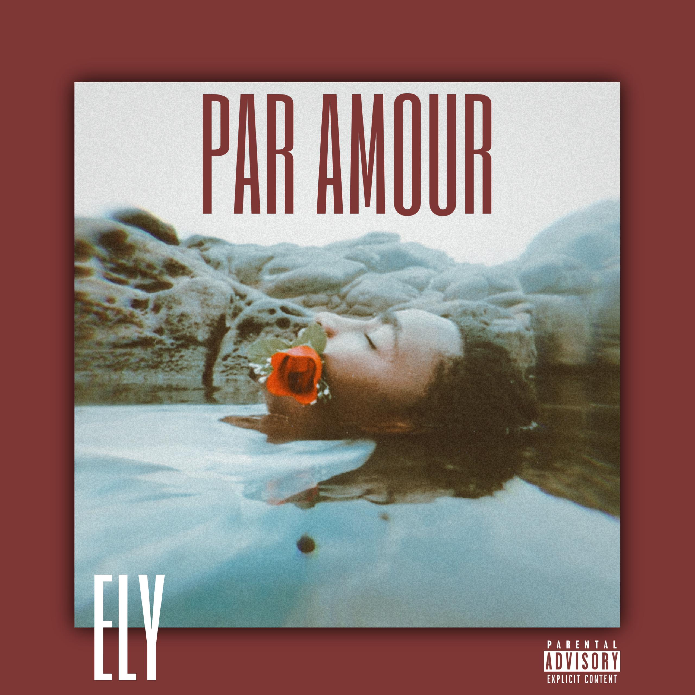
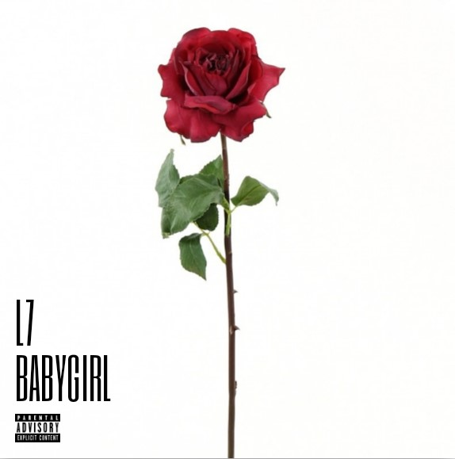
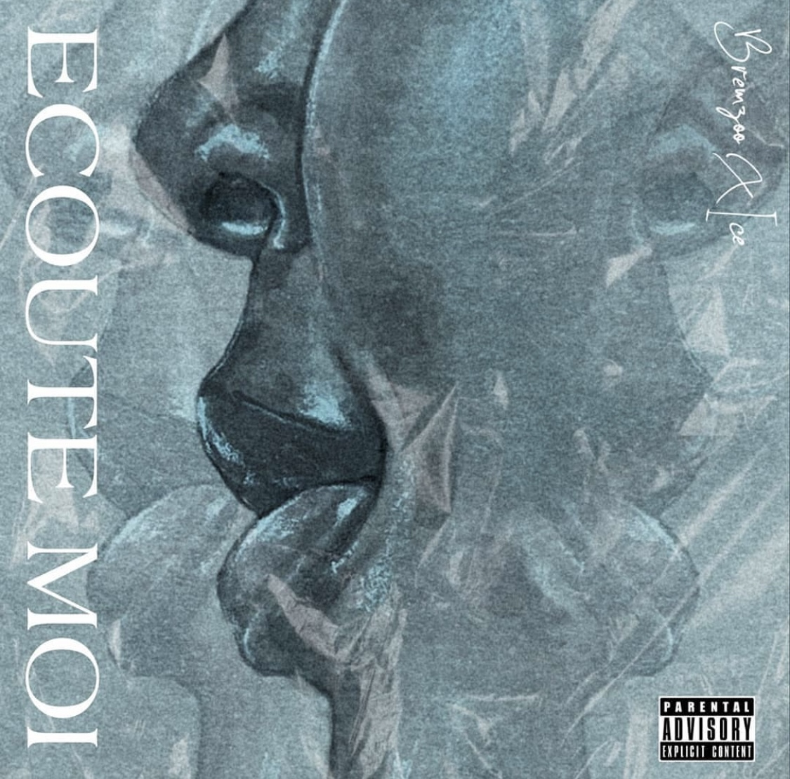
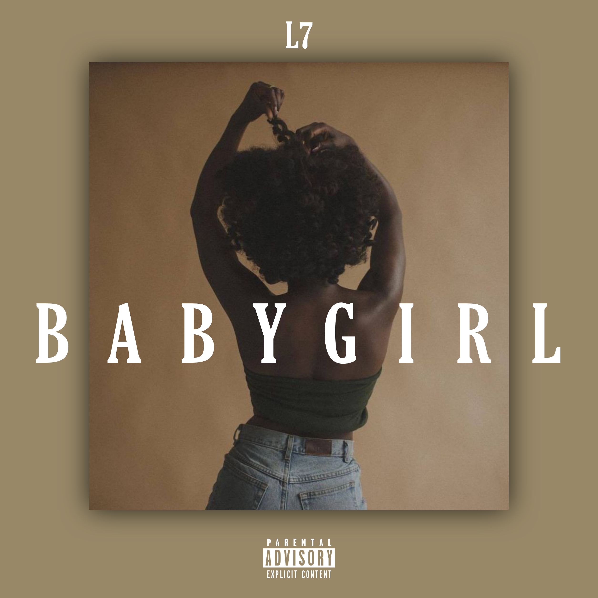
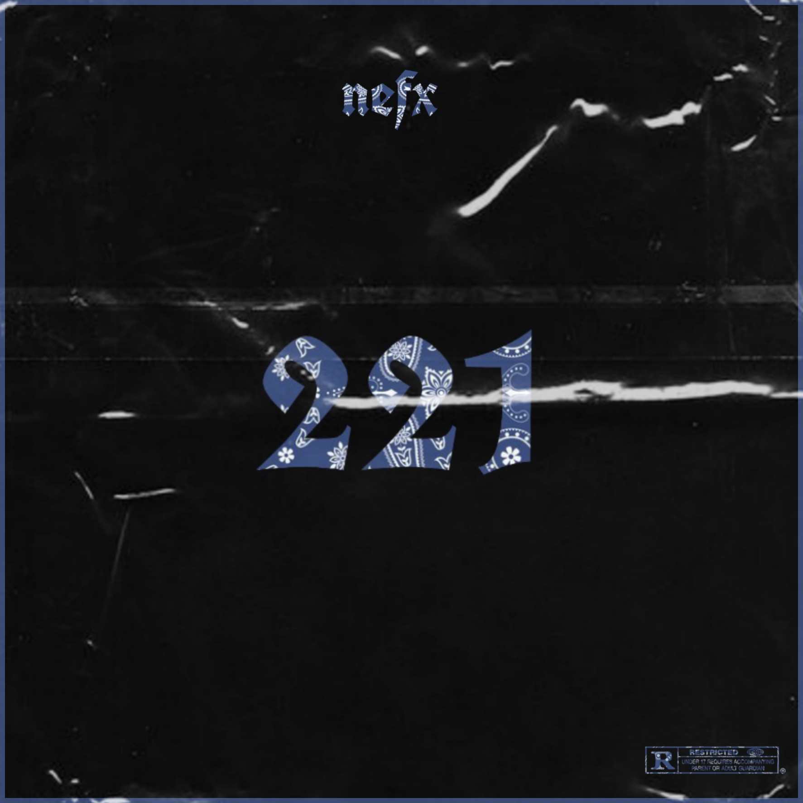

A s s v n e .
Influencer le monde à travers mon imagination.
Assane Aliou Diop
Graphiste & Développeur web
Depuis mon enfance, j'ai été fasciné par l'intersection entre l'art et la technologie. Cette fascination a tracé mon chemin vers une carrière passionnante dans le design et le développement web. Chaque projet est pour moi une toile vierge où je mêle esthétique et fonctionnalité pour créer des expériences uniques et captivantes. Chaque ligne de code, chaque pixel, est une opportunité de raconter une histoire et de donner vie à des idées innovantes. Mon parcours m'a permis d'explorer les multiples facettes de cet univers en constante évolution,et je suis déterminé à continuer d'apprendre et d'innover pour offrir des solutions créatives et efficaces à mes clients.
Covers Art
Chaque création que je réalise est une fusion d'art visuel
et de sonorités, capturant l'essence de
l'artiste et de leur musique.
Mon objectif est de créer des œuvres qui attirent l'œil et évoquent une connexion émotionnelle avec
le
spectateur,
amplifiant ainsi l'expérience musicale dans toute sa splendeur.
Quelques collaborations
     Videaste
La créativité, la passion et la persévérance sont des
qualités importantes pour réussir en tant que créateur de vidéos,
car le processus de création de contenu peut être exigeant et compétitif.
Ils doivent également être capables de s'adapter aux changements rapides dans les tendances et les
technologies pour rester pertinents auprès de leur public.